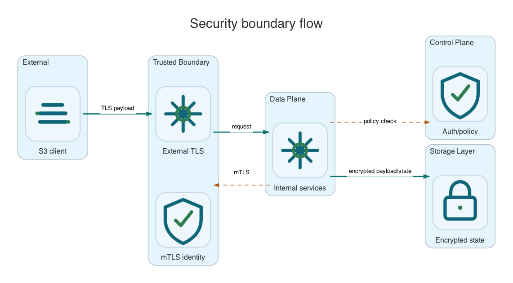

Reference / Runtime
Internal security, TLS, and local encryption boundaries.
Li9 S3 uses TLS between services, optional mTLS on sensitive internal paths, bucket policy enforcement at the S3 layer, and server-side encryption for stored objects. These controls are product-local and do not require AWS account services.
Security Layers

| Layer | Purpose | Where Configured |
|---|---|---|
| Client TLS | Protects S3 traffic from clients to the gateway. | Route/Ingress, load balancer, host listener, or gateway certificate config. |
| Internal TLS/mTLS | Protects gateway, metadata, object, KMS, audit, and healing service calls. | Operator/Helm generated Secrets or host TLS files. |
| Bucket policy | Authorizes S3 actions, resources, principals, and conditions. | S3BucketPolicy on OpenShift or S3 policy API. |
| Server-side encryption | Encrypts stored object data with local key wrapping or KMS-compatible provider. | S3 bucket encryption config and runtime KMS settings. |
| Audit trail | Records security-relevant access, authorization, and key operations. | Audit service and durable outbox configuration. |
OpenShift Checks
oc -n li9-s3-runtime get secret | grep -E 'tls|ca|kms|sse'
oc -n li9-s3-runtime get deploy,statefulset -o yaml | grep -E 'TLS|KMS_URL|AUDIT_SERVICE_URL'
oc -n li9-s3-runtime get s3storage li9-s3 -o jsonpath='{.spec.encryption.serverSide.enabled}{"
"}'Linux And Windows Checks
| Platform | Check |
|---|---|
| Linux | Validate file permissions under /etc/li9-s3/tls, service config references, and local HTTPS health endpoints. |
| Windows | Validate certificate file or store references, service account access, and Invoke-WebRequest -SkipCertificateCheck health endpoints. |
S3 Encryption Check
li9s3 get-bucket-encryption --bucket "$BUCKET"
printf 'encrypted
' > /tmp/encrypted.txt
li9s3 put-object --bucket "$BUCKET" --key security/sse-s3.txt --body /tmp/encrypted.txt --server-side-encryption AES256
li9s3 head-object --bucket "$BUCKET" --key security/sse-s3.txt --query ServerSideEncryptionCommon Mistakes
- Using S3 access keys as web UI credentials. Keep those identity systems separate.
- Disabling TLS internally for convenience. Internal traffic can include credentials, audit records, and key material references.
- Assuming SSE-KMS requires AWS KMS. Li9 S3 should support product-local or interchangeable KMS-compatible providers.